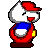
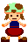
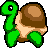
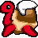
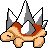
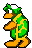

■スーパーマリョーワールド(仮)って？
HTMLとJavaScriptだけを使って、スクロール型のアクションゲームを
作ってしまおうという無謀な計画です。
テーブルレイアウト・多重フレーム・GIFアニメーションとJavaScriptの集大成です。
テーブルレイアウト・多重フレーム・GIFアニメーションとJavaScriptの集大成です。
■操作方法

[←] [→] or [S][F] 左右に移動
[↑]or[E] ツタに登る・土管に入る
[↓]or[D] しゃがむ・土管に入る
[WiiUの+]or[SPACE]or[X]or[K] ジャンプ・泳ぐ
[WiiUの-]or[Z]or[J] 押しっぱなしで走る ＆ ファイアー発射！
[↑]or[E] ツタに登る・土管に入る
[↓]or[D] しゃがむ・土管に入る
[WiiUの+]or[SPACE]or[X]or[K] ジャンプ・泳ぐ
[WiiUの-]or[Z]or[J] 押しっぱなしで走る ＆ ファイアー発射！
■ゲームのルール
マリョーを操作してゴールまでたどり着けばステージクリアです。
敵に当たったり穴に落ちたりすると死んでしまいます。
マリョーの数がゼロになったらゲームオーバーです。
敵に当たったり穴に落ちたりすると死んでしまいます。
マリョーの数がゼロになったらゲームオーバーです。
■リプレイ機能(テスト中)について
ゲームオーバー画面では、「リプレイ」ボタンを押すと
自分のプレイを最初から再生することができ、「リプレイ停止」を
押すと、そこからゲームを操作することが出来ます。
自分のプレイを最初から再生することができ、「リプレイ停止」を
押すと、そこからゲームを操作することが出来ます。
■動作環境について
動作確認は、WindowsXP SP2上のInternetExplorer 6 / FireFox 1.0.6で行っています。
Linux/Mac版Mozillaでも動くのかどうかは不明動くらしいです。
Operaでは動かないようです。
Linux/Mac版Mozillaでも動くのかどうかは不明動くらしいです。
Operaでは動かないようです。
■推奨スペック
| Internet Explorer | Pentium4 3Ghz / Athlon2500+ 以上 |
| Mozilla | 1Ghz以上のCPU |
■ストーリー
カメ帝国の一族にさらわれたピンチひめを助け出せ！
■登場人?物

|
このゲームの主人公。 海外ではキティちゃんに間違えられていることがあるようです |
|---|---|
| マリョー！ |
|
キミと友達。 モララー族15歳。 |
|
| りゅうじ |
|
|
ピノコ王国の王女。 カメ帝国の基準では絶世の美女らしい。 |
|---|---|
| ピンチひめ |
|  |
ピンチひめの侍女 |
|---|---|
| ひろゆこ |
■アイテム
|
ある有名な先生が開発したキノコ |
|
| コノ先生きのこ |
|
ファイヤーボールを発射できるようになる。 |
|
| さいたまフラワー |

|
＋激しく 1GET＋ |
|---|---|
| ＋1GETキノコ＋ |
■敵キャラクター
|
ピノコ王国の反逆者。 社会とか権力とか親とかに反抗してみたいお年頃らしい。 |
|
| チューボー |
|  |
カメ帝国の兵士。 あんこがたくさんつまってる。 |
|---|---|
| カメノコ |
|  | 空戦用タイプ |
|---|---|
| 羽カメノコ |
|
戦争用に改造された亀。 その装甲は、マリョーのファイアボールを弾く。 |
|
| ウォーマシン |
|  |
戦闘用に品種改良された亀。 防御よりも攻撃力を優先させている。 背中のトゲのせいで、踏みつけることが出来ない。 |
|---|---|
| トゲノコ |
|
常に上空にいて、トゲノコの卵を落としてくる。 |
|
| くもぞう |
|  |
ハンマーを投げつけてくる強敵 ぬるぽするやつは見逃さない |
|---|---|
| ハンマ兄弟 |
|
カメ帝国のリーダー的存在。 46歳。おやっさん。 背中のトゲは775本。 |
|
| かめぞう |
■よくありそうな質問と回答
- ・あのゲームと挙動がちがいます
-
スーパーマリョーワールド(仮)は、あのゲームを参考にしながら作っていますが、
あのゲームのプログラムを解析しているわけではないので、まったく同じ挙動にはなりません。
(あえて挙動を変えている部分もあります)
記憶や攻略サイトを頼りに「この辺はこうだったかなあ…」と思い出しながら作っています。 - ・なんだか当たり判定がおかしい
-
一フレームの移動単位が大きかったり処理速度の都合上、
どうしても判定がおおざっぱになってしまいます。
今後はもうすこし調整していこうと思います。 - ・なぜ解像度が可変になっているのですか
-
今までのブラウザゲームというと、パソコンの小さいモニターの中の、
ブラウザウィンドウの中の、さらにその中の四角い小さな枠に囲われた
ゲームウィンドウを覗き込むようにしながらプレイする…という物ばかり
だったので、ウィンドウの全面に表示できるようにしたいと思っていました。
画面サイズに依存しない設計にしたおかげで、ステージごとに仮想解像度を
自在に設定することができます。
- ・ゲームパッドを使いたい
- JoyToKeyなどのツールを使ってキーを割り当てるしかないと思います。
- ・やたら動作が重いんですけど
-
IEだとゲームにならないくらい重いかもしれませんが、
Mozillaにすると、なんとか遊べるようになります。
今後、スクリプトをチューニングしていけば、多少は速くなるかもしれませんが、
HTMLの生成や書換えが重さの原因なので、あまり変わらないかもしれません。
-
・なんでわざわざHTMLで作るんですか？
・なにもマークアップ言語でアクションゲーム作らなくても… -
今までゲームを作った経験すら無いですし、自分でも無謀だと思っています。
しかし、HTMLのTABLEとレイヤーを見て、ゲーム機のバックグラウンド＆スプライトに似ているなあ…と思った人は、自分以外にも結構いるのではないでしょうか。
HTMLで作成することのメリットを挙げるとすれば、
「JAVA Appletやプラグイン系と違って、HTML文書とゲーム部分をボーダーレスに融合できる」
という点でしょうか。
ゲーム画面中にそのままバナーや文章を埋め込むことができます。
- ・ステージの作り込みが甘い
-
とりあえず８−４まで作ってから細かいところを調整しようと思います。
- ・1-2の土管の手前のコインはどうやって取るの？
-
敵を踏みつけた反動で大ジャンプしましょう。
このゲーム全般で必要なテクニックです。 - ・サウンドが聞こえません。故障でしょうか？
-
故障ではありません。 このゲームでは音は出ません。
HTMLで、リアルタイムに音声を鳴らしたり切り替えたりするのは難しいと思います。
- ・どうしてMozillaはキビキビなのにIEはもっさりなの？
-
なぜここまで速度差が出るのかについては、よくわかりません。
なにか書き方を変えれば、IEでも速くなるのかもしれません。
HTMLの生成や書き換えはMozillaのほうが速いですが、
IEは巨大なキャラを動かしたりエフェクトをかけたりするのが得意なようです。 - ・Mozillaだと、跳ね飛ばしたキャラクターが逆さまになりません。
-
Mozillaには画像を上下や左右に反転させる機能がないので、
そのまま表示されるようになっています。
(反転機能が無くても、上下逆さまになった画像を用意しておけば
いいのですが、データが倍増するので省略しています) - ・100% HTML+Javascriptなのに、ActiveXを切っていると動かないのは何故？
-
どうやらIEは、ActiveXを切ると半透明表示やモザイク等のエフェクト系も
使えなくなってしまう仕様のようで、そこでスクリプトエラーが
発生して止まってしまうようです。
(ActiveXが無効の場合にエラーを出すのではなく、その部分を無視するような
仕様にしてくれれば最低限動作すると思うのですが、どうも融通が利かないようです。) - ・制作期間はどのくらい？
-
まだ完成していないので制作期間終了してませんが、
制作開始からWEB公開(2004/7/4)までは１ヶ月半ぐらいです。 - ・ヒロインがかわいくない
-
現実はこんなものです。

- ・ソース・画像データの扱いについて
-
勉強目的で作っただけの物なので、著作権は放棄します。
無断転載・無断ミラーサイト・無断改造・無断配布・無断キャラ替え等々、すべて自由です。
ベーマガに投稿したり学校の課題として提出してしまってもかまいません。
こちらへの連絡も不要です。